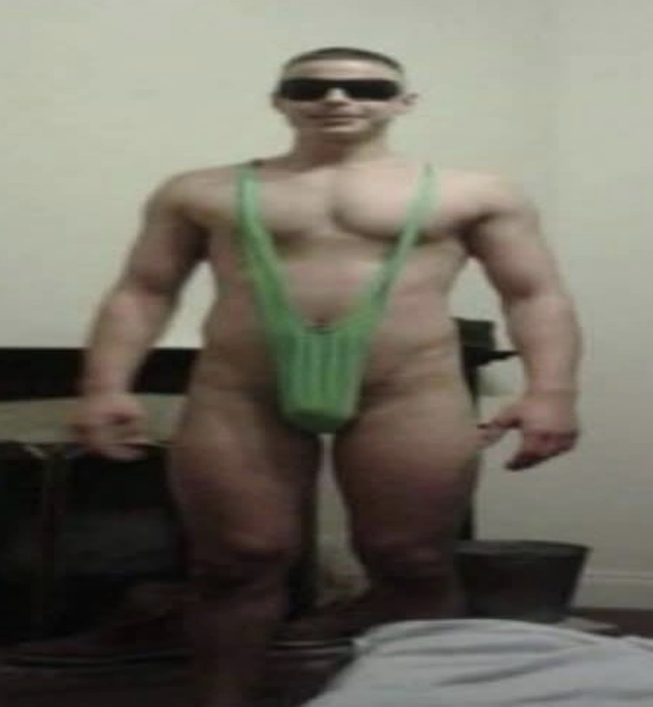
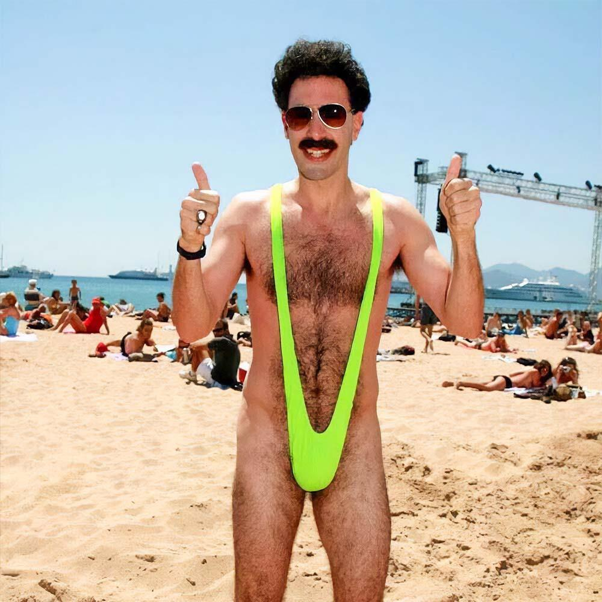

A "Laci kép" eredetileg egy szigorúan privát felvétel volt: Laci egy Borat-stílusú mankinit és napszemüveget öltött magára a poén kedvéért. A fotó soha nem került volna nyilvánosság elé, ám a sors (és a technika) közbeszólt. Laci egy alkalommal véletlenül lezáratlanul tette zsebre a telefonját, a készülék pedig tulajdonosa tudta nélkül kiposztolta a képet Facebook Story-ba. Mire Laci az ismerősei záporozó kérdéseiből rájött a hibára és törölte a posztot, a kép már önálló életre kelt: valakinek pont ennyi idő is elég volt ahhoz, hogy az utókornak megmentse a pillanatot.

A legendás Lacin kívül akad még említésre méltó névrokon. A videóban elhangzó, "HÁDE LACI!" felkiáltásból ítélve ezt az úriembert is Lacinak hívják. A felvételen hősünk látható, amint éppen kulturált keretek közt "nyomkodja a lábát". Békésen végzi a műveletet, amíg egy második személy be nem ront a szobába, durván félbeszakítva a folyamatot. Ijedtségében Laci hirtelen előrántja játszótársát a paplan alól: a Macit (ami egyébként egy szamár). Miután a látogató elkötelezetten érdeklődik a látottak felől, Laci higgadtan közli lábfájdalma tényét. Ekkor a kérdező kiszúrja a Nivea testápolót is, és azonnal faggatni kezdi felőle – Laci pedig készségesen igazolja, hogy bizony az is a kezelés része. Nem tudni, mi történt ezután, mivel a videó hirtelen véget ér – ki tudja, talán végül ő is becsatlakozott egy közös lábnyomkodásra?
Utolsó említésre méltó hősünk nem más, mint Laci Gaming, aki a digitális küzdőtéren, a Minecraft világában mérette meg magát. Éppen egy feszült PvP csatában próbált felülkerekedni, amikor jött a feketeleves: egy másik játékos alattomos módon, egy csákánnyal vitte be a végső csapást. Laci Gamingnél ekkor elszakadt a cérna: a dühétől vezérelve látványosan felállt a székére, és egy jól irányzott mozdulattal lerúgta a monitort az asztalról. A pusztítás zajára riadtan kiáltott fel a felesége: "Úúú, Laci, ülj le!" Nem tudni, hogy a technika túlélte-e a haragot, vagy Laci végül megfogadta-e a tanácsot, de az biztos, hogy aznap este a virtuális harcot a valóságos rombolás váltotta fel.